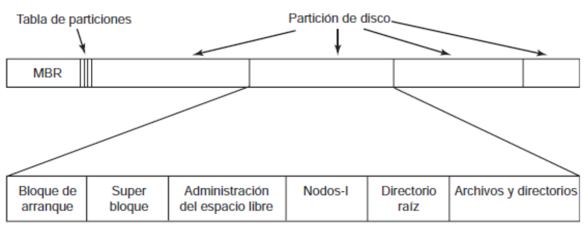
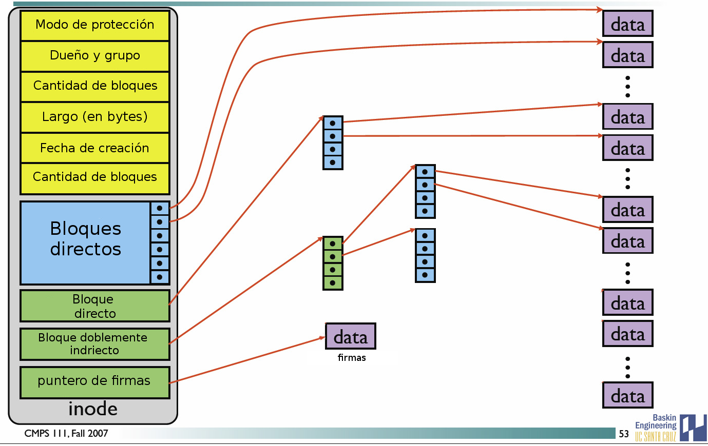
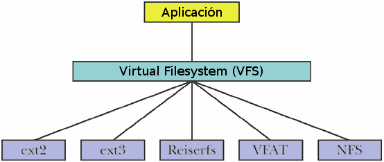
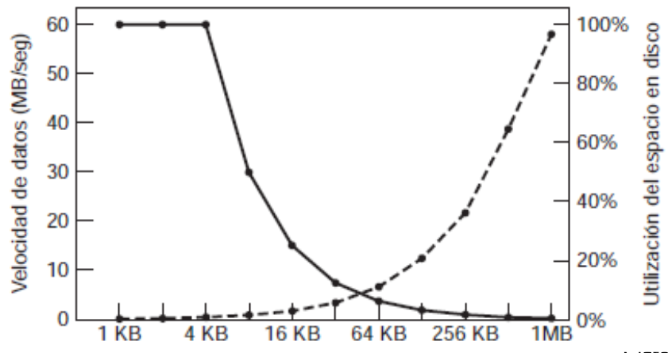

Universidad Nacional Experimental Del Táchira
Decanato De Docencia
Dpto. Ingeniería en Informática
Sistemas de Archivos
Código 0435607T
Sistemas de archivos
- Son unidades lógicas para estructurar la información guardada en un dispositivo de almacenamiento, para posteriormente ser representada textualmente o gráficamente utilizando un gestor de archivos.
- Se almacenan en el disco y se diseñan mediante capas.
- Cada Sistema Operativo suele soportar sus propios sistemas de archivos.
- Algunos estan diseñados para velocidad, otro para grandes archivos, para pequeños, para base de datos, lectura rápida, etc.
Sistemas de archivos
- Es la forma en la que los archivos y directorios son almacenados, administración del espacio, eficiencia y confiabilidad.
- Diferente al punto de vista de usuario, donde sólo se preocupan en como nombrar los archivos, recuperarlos, operaciones sobre ellos y otros elementos relacionados con la interfaz.
Distribución del
sistema de archivos

Bloque de control de archivo
Es una estructura de almacenamiento que contiene información de un archivo.
| Permisos de archivo |
| Fecha de creación (creado, acceso, modificado) |
| Dueño del archivo, grupo, ACL |
| Tamaño del archivo |
| Puntero(s) al bloque(s) del archivo. |
Sistema de archivos en Memoria
Proceso de lectura y escritura a través del sistema de archivos cargado en memoria
Gestión de espacio ocupado
A medida que se va almacenando información en el disco, es necesario administrar el espacio libre restante para permitir almacenar la mayor cantidad posible de bloques de archivos.
- Asignación contigua.
- Asignación ligada.
- Tabla de asignación de archivos.
- Asignación indexada.
- Multinivel.
Asignación contigua
- Cada archivo ocupa un conjunto contiguo de bloques en el disco.
- Simple implementación.
- Desperdicia espacio.
- Se hace fácil el acceso aleatorio y secuencial.
- No pueden crecer los archivos por tener los límites definidos.

Asignación ligada
- Cada archivo es una lista enlazada de bloques regados por todo el disco.
- Solo requiere de una dirección inicial y final.
- No desperdicia espacio pero se dificulta el acceso aleatorio.
- El puntero ocupa espacio, por lo que el espacio de almacenamiento ya no es el bloque completo
{kind=link}
Asignación indexada
- Junta todos los apuntadores en un único bloque índice.
- Requiere una tabla índice.
- Permite el acceso aleatorio.
- Acceso dinámico sin fragmentación externa, pero con la sobrecarga del bloque índice.
Nodos i (i_nodes)
- Lista los atributos y las direcciones de disco de los bloques del archivo.
- Cada nodo-i está identificado por un número entero
- Esta lista solo necesita estar en memoria cuando el archivo esta abierto.
- Si un nodo-i ocupa n bytes y puede haber un máximo de k archivos abiertos, entonces el arreglo que contiene todos los nodos-i en memoria es de nk bytes
Ejemplo de nodo-i
Fuente: Darrell Long
{kind=link}
¿Qué es un inodo?

Fuente: Julia Evans
Sistemas de archivo con sistemas de bitácora (o journaling)
- Guardan cada actualización al sistema de archivos como una transacción.
- Todas las transacciones se escriben a la bitácora.
- Una transacción se compromete cuando está escrita en la bitácora, pero no esta actualizada en el S.A.
- Las transacciones en la bitácora son escritas de manera síncrona al S.A.
- Al modificar el S.A. se elimina la transacción de la bitácora.
- Si se cae el sistema de archivos, todas las transacciones pendientes en la bitácora se realizan.
Breve historia
Principios de la historia moderna
(principios de los 80)
- Basados en sectores.
- Tablas de inodos.
- Mapas de bit para espacio libre.
- Resource forks.
- Estructura de jerarquía de directorios.
Casi historia moderna
(finales de los 80)
- Gran uso de arboles balanceados.
- Primeros usos de journaling
- Se pudo usar direcciones de 32bits.
- La optimización de CHS, permitió tener varios sistemas en un mismo disco.
Historia moderna
(principios de los 90)
- Se maximizó la concurrencia de E/S.
- Soporte para archivos mayores a 4GB.
- Se realizan investigaciones para mejorar la búsqueda.
- Aparecen investigaciones de S.A. con registros (logs) y copy-on-write.
Historia reciente
(finales de los 90)
- Aparece soporte asíncrono de journaling.
- Transformación de datos (compresión).
- Actualización de software para implementar nuevas características.
Tecnologías actuales
(Desde el 2000)
- Correción transparente de errores.
- Manejo directo de dispositivos.
- Árboles estructurados de registros.
- Árboles balanceados de referencias de copy-write.
Ejemplos de
implementaciones
FAT (File Allocation Table)
 Ejemplo de como funciona las particiones FAT
Ejemplo de como funciona las particiones FAT
NTFS (New Technology File System)
Sistema de archivos de Unix
Sistemas de
archivos virtuales
- En los SO modernos se pueden conseguir varios sistemas de archivos coexistiendo: EXT3, EXT4, NTFS, FAT32, NFS.
- Para evitar heterogeneidad en las llamadas al sistema, se ha implementado un meta sistema de archivos llamado VFS (Virtual File System).
- Se crea una capa adicional para hacer las llamadas
Sistemas de
archivos virtuales (VFS)

Administración y optimización
Administración de espacio del disco
- Se divide el espacio en bloque de tamaño fijo.
- Los archivos se dividen en bloques que serán asignados a cada uno de los espacios (o bloques) disponibles en el disco.
- Los bloques de los archivos pueden o no ser asignados de forma contigua.
Administración y optimización
Tamaño del bloque
¿Qué tan grande debe ser el tamaño de cada bloque del disco?
- Bloques de tamaño grande crean gran desperdicio de espacio en archivos pequeños, pero hace la búsqueda mas rápida.
- Bloque de tamaño pequeño minimizan el desperdicio de espacio pero ralentizan significativamente la lectura de archivos, puesto que deben recorrer varios bloques para tener acceso a el.
Administración y optimización
Tamaño del bloque
Administración y optimización
Cuotas de disco
- En los sistemas multiusuario se hace necesario que se haga una distribución equitativa del disco entre los usuarios.
- Se pueden definir cuotas de disco de grupos y de usuarios.
- Permite evitar que un usuario o proceso sature el disco y monopolice este recurso.
Respaldos
Recuperación ante desastres
- Los respaldos pueden ser definidos en esquemas completas, incrementales o diferenciales.
- Se debe tener en cuenta permisos de usuario, cuotas de disco, estado del sistema de archivo, archivos borrados lógicamente
Consistencia del S.A.
- Los sistemas de archivos leen/modifican/escriben en bloques. Si hay una falla en el sistema antes de escribir los cambios, puede crearse una inconsistencia.
- Se puede tornar mas crítico sin las inconsistencias se presentas en bloques con nodos-i, directorios o la lista de bloques libres.
- Existen herramientas que permiten verificar el sistema de archivos, desde el punto de vista de metadatos y datos. Ej: fsck y scandisk.
Consistencia del S.A.
Algunas situaciones no deseadas en un sistema de archivos:
- Bloque faltante en la tabla de bloques libres y bloques en uso.
- Bloque duplicado en la tabla de bloques libres.
- Bloque duplicado en la tabla de bloques usados
Rendimiento del S.A.
- El disco duro es el dispositivo mas lento del sistema, en comparación con el CPU o la memoria principal.
- Sus componentes mecánicos requieren movimiento para ubicar la pieza de información a leer, así como también el tiempo para leer la pieza de información en si.
- Si se requiere una serie de datos, es necesario repetir el proceso de movimiento del cabezal y lectura del dato, tantas veces como el proceso lo requiera.
Rendimiento del S.A.
Uso de cache
- Consiste en mantener una serie bloques utilizados frecuentemente en un espacio de memoria principal.
- El reemplazo de los bloques en cache se hacen utilizando los métodos de FIFO, segunda oportunidad y LRU.
- Las estrategias de escritura y sincronización con el disco se llevan a cambo mediante cache de escritura inmediata (mayor I/O, cambios se reflejan inmediatamente) y cache de escritura diferida (menos I/O, cambios se reflejan en lapsos de tiempo determinados).
Rendimiento del S.A.
Desfragmentación de discos
- En un sistema recién instalado los archivos están organizados de forma contigua.
- En la vida útil del sistema, se crean, modifican y eliminan archivos, dejando huecos y archivos esparcidos por todas partes.
- La desfragmentación reubica los archivos, colocándolos uno tras otro en el disco, de tal forma que el cabezal no necesite realizar tantas operaciones de búsqueda para recuperar la información.
Anexos
Descriptor de archivo

Fuente: Julia Evans
Sistemas de archivos
Linux Filesystems: Where did they come from? Charla realizada en el linux.conf.au de 2014 sobre sistemas de archivos.